arXiv preprint
Single-photon avalanche diode (SPAD) cameras operate fundamentally differently from conventional cameras due to their photon-counting nature. Each frame produces a binary image: pixels report zero if no photons arrived during exposure, and one if one or more photons arrived. Reconstructing a scene or inferring its properties from a single binary frame is difficult because many different images could produce the same measurement; thus, the inverse problem is fundamentally one-to-many. As we gather more binary measurements, the inherent uncertainty associated with the inverse problem and any associated inference diminishes. With sufficient photon counts, photon noise becomes negligible relative to the signal mean, enabling near-deterministic scene recovery and inference. This work characterizes the transition from stochastic to near-deterministic scene understanding as photon budget increases, analyzing how the stochasticity in photon arrival affects downstream inference tasks. Technically, we develop a conditional generative framework based on a Hypergeometric frame-thinning process for accumulated binary SPAD measurements. Generative models capture the one-to-many nature of photon-starved inverse problems, enabling empirical characterization of how this ambiguity diminishes with increasing measurements and its impact on downstream tasks like character recognition, QR code decoding, and facial analysis.
Swipe sideways to see both panels.
Simulated. SPAD measurement of an FFHQ face image (left) and 16 posterior samples generated by our model (right), as the number of binary frames grows from 0 to 10,000.Face image from FFHQ (Karras et al., 2019), converted to grayscale and resized to 64 × 64.
A SPAD pixel reports one if one or more photons arrived during the exposure and zero otherwise, so each frame is a binary image. From a single binary frame, many different images could produce the same measurement: the inverse problem is one-to-many. As more binary frames are gathered, this uncertainty diminishes; with enough photons, recovery and inference become near-deterministic.
For a deterministic denoiser trained with an L2 loss, the risk minimizer is the conditional mean, which is blurred when the conditional distribution is multimodal. We therefore treat restoration in the photon-starved regime as a conditional image generation problem.
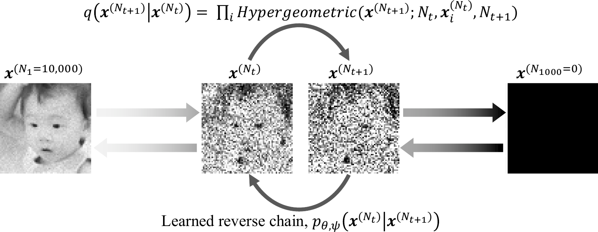
One step of the chain. Frame thinning keeps a uniformly random Nt+1 of the Nt binary frames, so each pixel's retained count is hypergeometric (top arrow); the learned reverse chain adds frames back (bottom arrow). Images are simulated SPAD measurements.Face image from FFHQ (Karras et al., 2019), converted to grayscale and resized.
We captured a printed digit grid and face images with a Pi Imaging 512 × 512 SPAD camera. Hot pixels are suppressed (for the digits, using a dark calibration capture); the digit grid is rectified and split into 28 × 28 patches, and the face measurements are downsized to 64 × 64.
Swipe sideways to see all columns.
Real SPAD capture of the same person without sunglasses (Nk = 0 to 1000 binary frames), with face landmarks drawn on each posterior sample generated by our model.
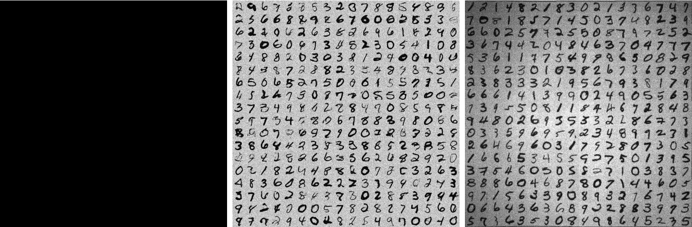
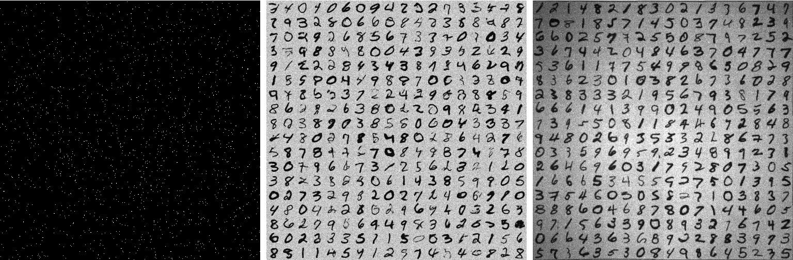
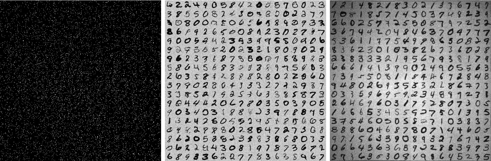
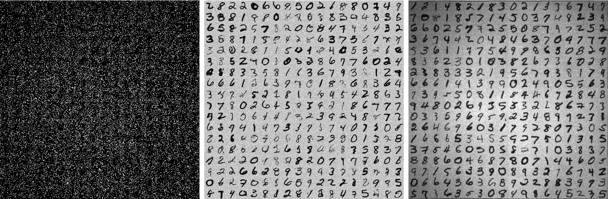
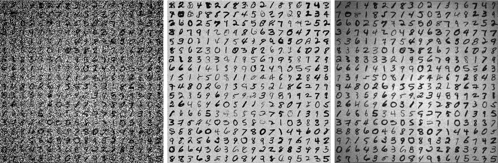
Real capture of a printed digit grid at Nk binary frames. The posterior sample is one grid generated by our model from the measurement; the target is a high-count capture of the same grid.
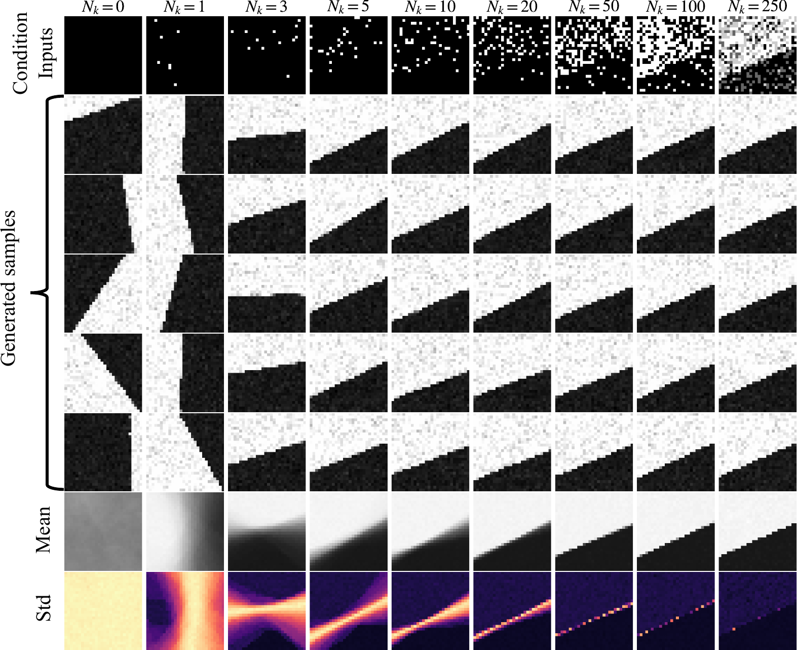
Simulated. Each column fixes one measurement at Nk frames, followed by generated samples, their mean, and their normalized standard deviation (false color). Paper Fig. 6.
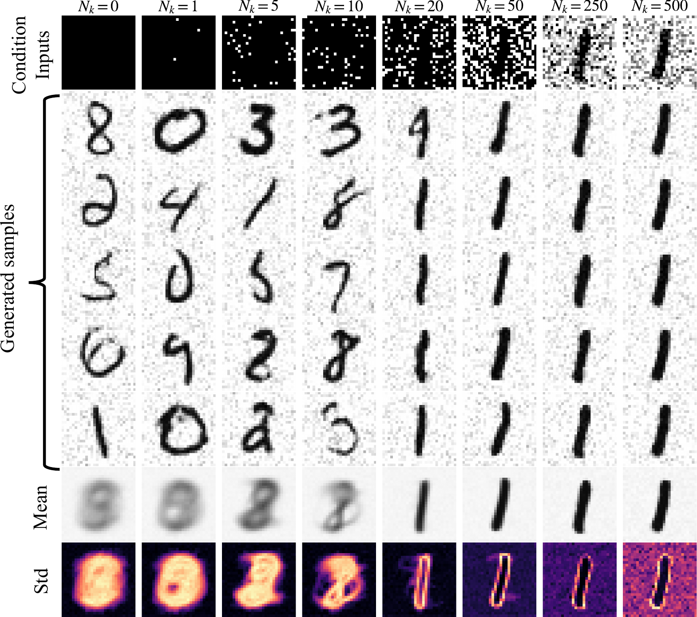
Simulated. Generated samples, their mean, and their standard deviation (false color) for fixed MNIST measurements. Paper Fig. 9.Digits from MNIST.
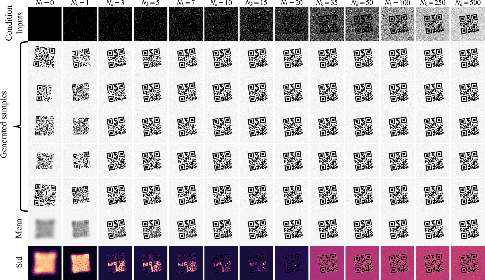
Simulated. Multistep generation for fixed QR-code measurements: samples, mean, and standard deviation (false color, each map normalized to a maximum of 1). Paper Fig. 12.QR codes from QR Code Dataset V2 (yasin sancar, 2025, CC BY 4.0).
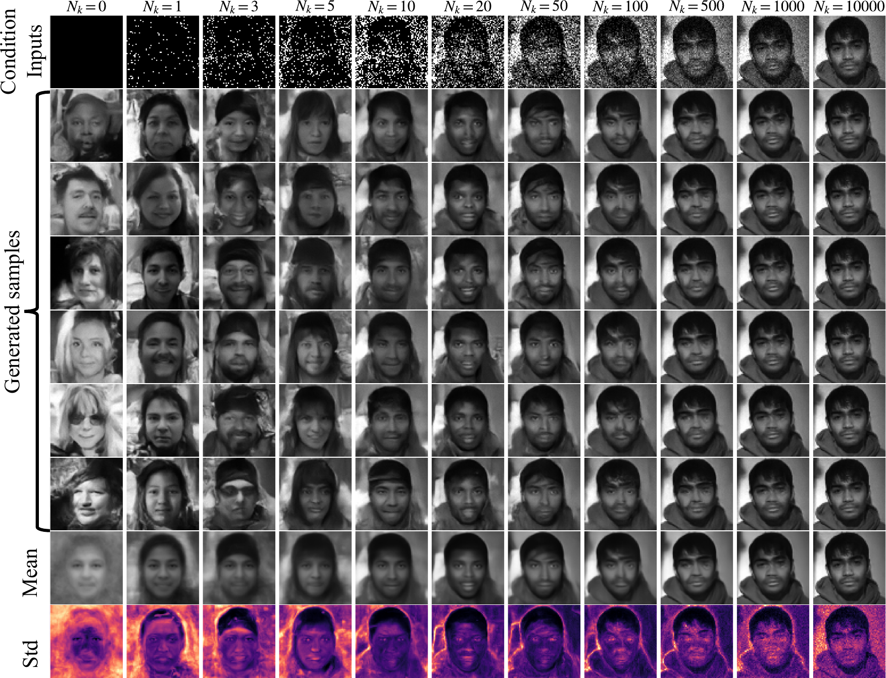
Real capture. For each measurement of a real face (top row, Nk binary frames), images generated by our model, their mean, and their standard deviation (false color). In this example, face shape and pose settle with a few frames; eyes, mouth, and hair need more. Right half of paper Fig. 16.
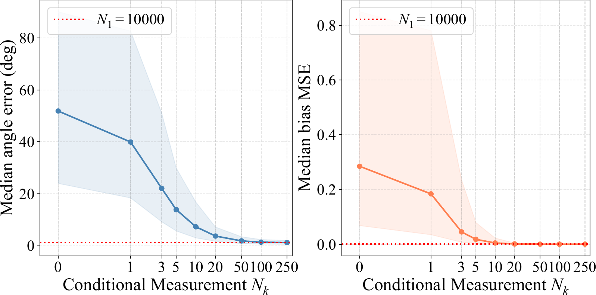
Simulated. Edge prediction on generated samples against Nk; the red dotted line is performance on high-count (N1 = 10,000) images. Paper Fig. 8.
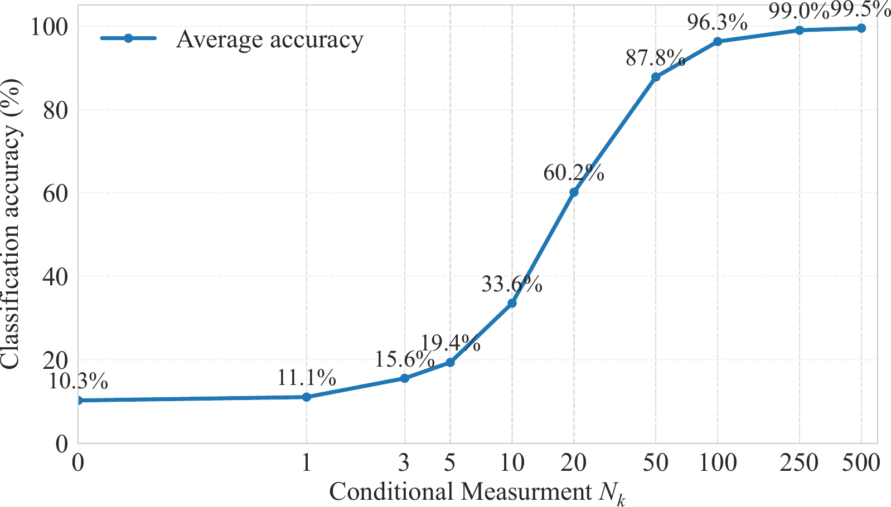
Simulated. Classification accuracy of generated MNIST samples against Nk. Paper Fig. 10.
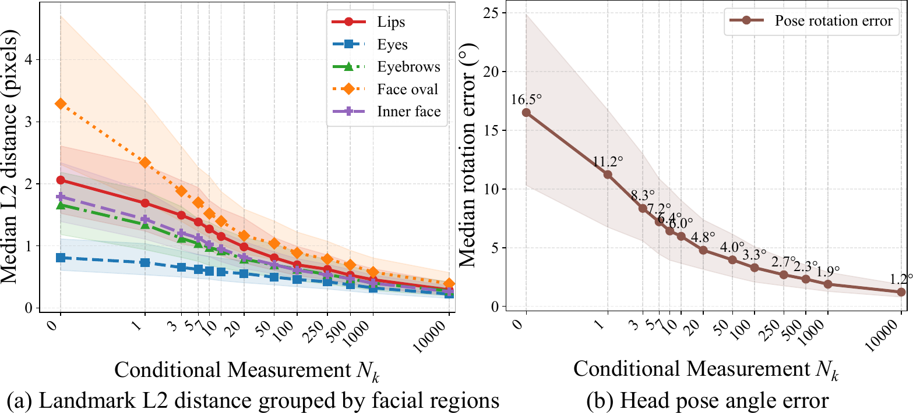
Simulated. MediaPipe landmarks and head pose on generated FFHQ samples, compared with those on high-count (N1 = 100,000) images: medians with the 25th–75th percentile range. Paper Fig. 14.
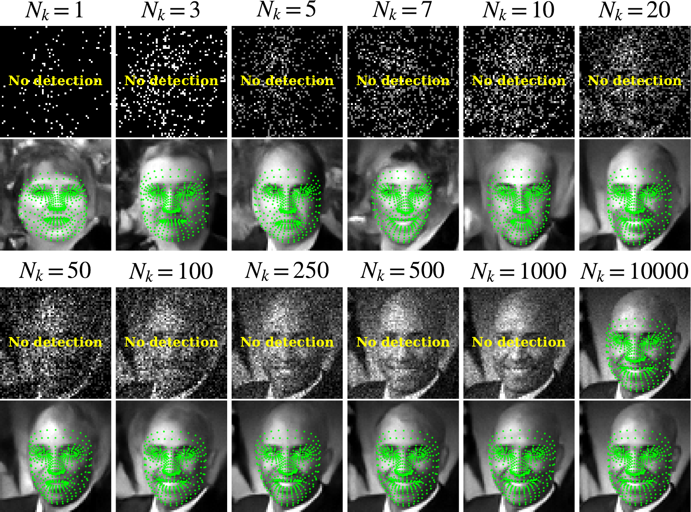
Simulated. MediaPipe landmarks on generated FFHQ samples and on the raw SPAD measurements, from Nk = 1 to 10,000. Paper Fig. 15.Face image from FFHQ (Karras et al., 2019), converted to grayscale and resized to 64 × 64.
@misc{lee2026photonworldsposteriorspredictions,
title={One Photon, Many Worlds: Posteriors and Predictions with Single-Photon Cameras},
author={Haejoon Lee and Mohit Gupta and Vijayakumar Bhagavatula and Aswin C. Sankaranarayanan},
year={2026},
eprint={2610.02675},
archivePrefix={arXiv},
primaryClass={eess.IV},
url={https://arxiv.org/abs/2610.02675},
}